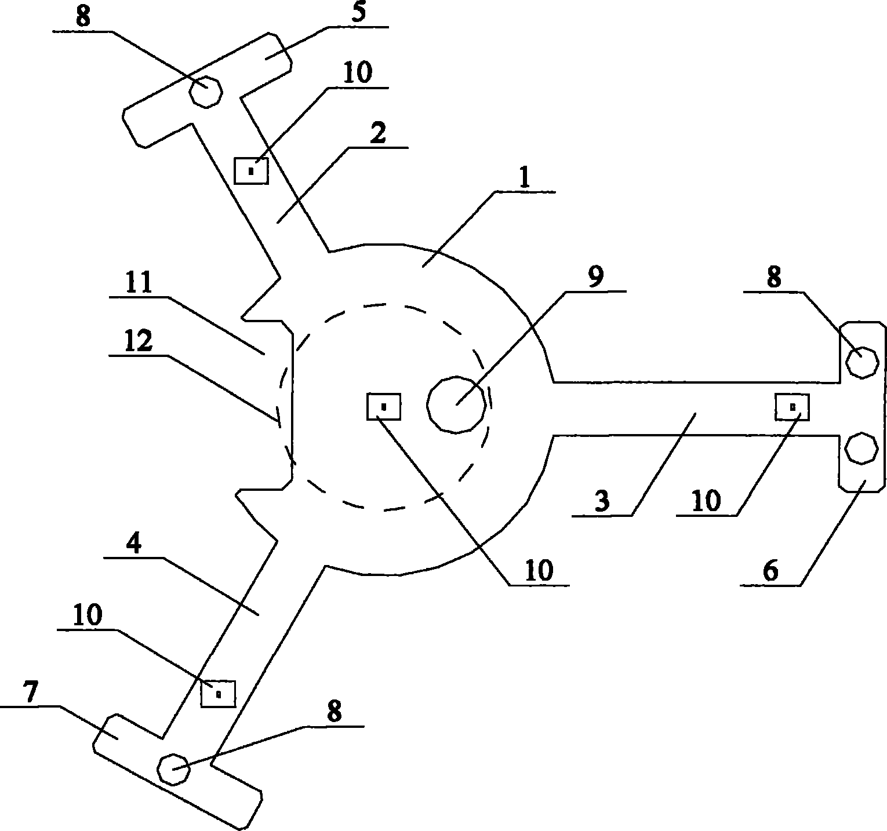

发明名称--能够在CT和MRI影像里面被识别位姿的配准工具
| 申请号 | CN201420224680.0 | 申请日 | 2014.05.05 | ||
| 公开（公告）号 | CN203829047U | 公开（公告）日 | 2014.09.17 | ||
| IPC分类号 | A61B19/00; A61B5/055; A61B6/03 | 申请（专利权）人 | 翟伟明;盛林; | ||
| 发明人 | 翟伟明;盛林; | 优先权号 |
摘要:
本实用新型提供了一种能够在CT和MRI影像里面被识别位姿的配准工具，本实用新型所述工具主体上开有一个中间圆孔，工具主体的一侧设有一凹口，磁感应定位装置设置在工具主体上，所述第一直杆、第二直杆和第三直杆分别与工具主体圆形边沿相连接，工具主体、第一直杆、第二直杆和第三直杆上分别设有一个影像可识别标记物。本实用新型是设计了一种能够在CT和MRI里面识别位姿的配准工具，利用这种工具，医务人员无需做任何额外的手工坐标点的选取操作，只要通过术前CT或MRI影像就可以识别影像里工具的位姿，并以此为基础完成快速自动配准的工作，从而在减少医务人员操作难度的同时也提高了手术导航的精度。
摘要附图:
